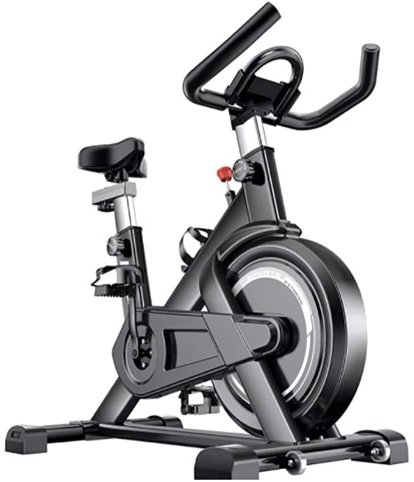
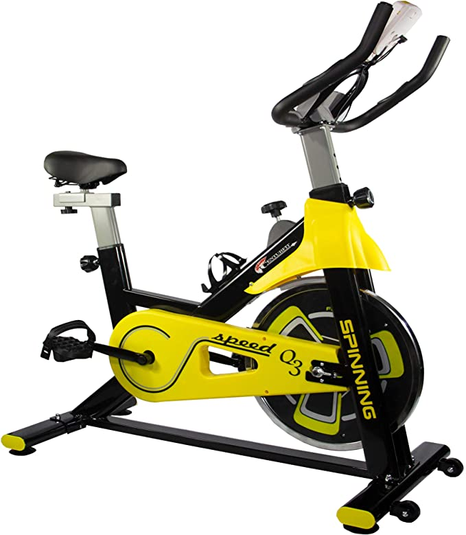
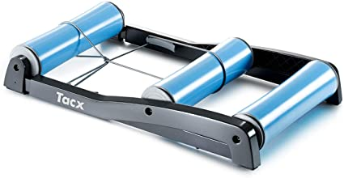
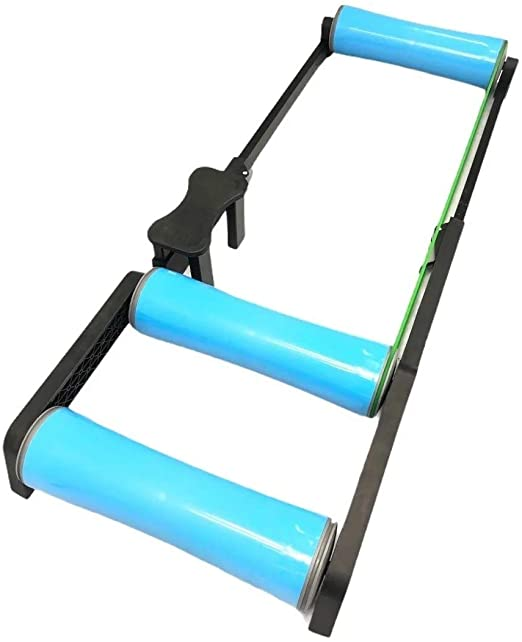
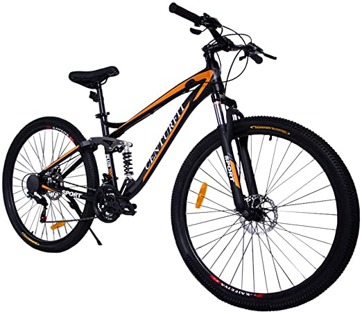
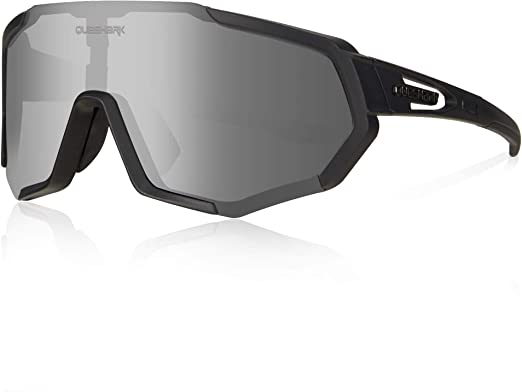
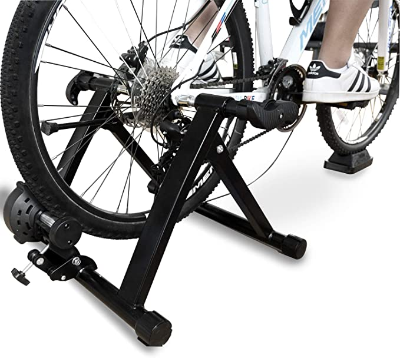
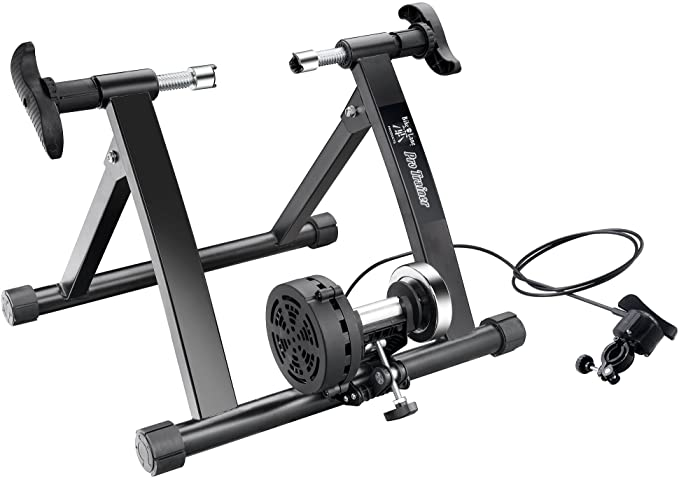
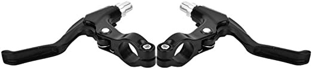

Rodillo para bicicleta
Los rodillos para bicicleta son la alternativa perfecta para poder pedalear en casa y disfrutar del ciclismo en cualquier momento.
Ya sea porque hace mal tiempo o causas de fuerza mayor como la que estamos viviendo, con el rodillo siempre podremos subirnos a la bici y dar unos pedales.
Pero no todos los rodillos son iguales y cada uno tiene sus virtudes y desventajas.
Bicicletas estáticas (Spinning)
Aunque las bicis de spinning y estáticas no son rodillos en sí también me gustaría mencionarlos y hablar de esta posibilidad ya que algunos ciclistas prefieren esta opción, estos aparatos son más típicos de gimnasios, estos aparatos suelen ocupar mucho espacio y el precio también es más elevado, el desgaste por uso no se produce en tu bicicleta sino en la propia spinning, es recomendable para las personas que no quieran meter su bicicleta a la vivienda y no disponga de una bicicleta de carretera o ruedas de carretera.
|  |

|

|
Se puede mencionar que este tipo de bicicletas suelen ser más caras que los rodillo convencionales y ocupan mucho más espacio, ademas la mayoría no se puede utilizar con un simulador.

|

|
 |
Rodillo libre, de rulos o de cilindros
Estos rodillos son de construcción sencilla, requieren poca practica y un poco de equilibrio para empezar a utilizarlos, como ventajas sobre estos rodillos podríamos mencionar su simpleza, su precio razonablemente bajo, da unas sensaciones de rodar con una bicicleta de carretera y es muy accesible y fácil de usar.
|  |  |

|
Como desventajas podemos mencionar que no tiene regulación de dureza y requiere una adaptación y aprendizaje, aún así son rodillos que no te permiten relajarte sobre la bicicleta como sería en un rodillo estático.
Rodillos de cintas o de banda
Este tipo de rodillos son más bien cintas para correr pero adaptadas a la bicicleta, lógicamente, pero con un gran parecido, lo mejor de estas cintas es la adaptabilidad de la dificultad que ofrece ya que, entre otras cosas puedes modificar el grado de inclinación automáticamente para dar mayor realismo, su gran inconveniente sería el precio y el espacio, ya que es muy caro y ocupa muchísimo más espacio que una bicicleta normal.

|
 |  |
Rodillos fijos o estáticos
Son los más accesibles para casi todo ciclista, son económicos, fáciles de utilizar ya que solamente tienes que montar la bicicleta sobre él y luego recogerlo todo liberando el espacio en la habitación.
|  |

|
 |
Están los rodillos magnéticos que son más baratos y los rodillos de fluido que son más silenciosos pero son un poquito más caros. Estos rodillos también pueden regularse en dureza y son ideales si no quieres utilizar mucho espacio en tu casa, son fáciles de recoger y como inconveniente se puede comentar que no se pueden ocupar con simulador, los magnéticos suelen ser bastante ruidosos y al utilizarlos con tu bicicleta se desgastan sus componentes en particular las cubiertas, puedes comprar unas cubiertas adaptadas para rodillo.
Rodillos de transmisión directa
El rodillo de transmisión directa es perfecto para aquellas personas que busquen un aparato de buena calidad con un ruido muy bajo y que son fluidos y la gran mayoría también pues se pueden utilizar con simulador.
|
|
|
|
Son rodillos donde no debemos colocar la rueda trasera y van directos por medio de un cassette a nuestra bicicleta, como ventajas podemos comentar que son muy silenciosos, no desgastan la rueda trasera, aunque si la cadena y el cassette, por lo que también lo podemos utilizar con nuestra bicicleta de montaña también tienes mayor realismo al usarlo con simulador, no todos se puede utilizar con simulador pero la gran mayoría viene con potenciómetro o medidor de potencia integrado, algo que te ayudara a conseguir un entrenamiento más eficiente, el único inconveniente sería que son mucho más caros, de todos modos estos son rodillos como el elite.

|
 |

|